Corsi sul vino personalizzati e degustazioni su regioni meno conosciute.
Milano, home-based, piccoli gruppi.
Newsletter senza tecnicismi e community WhatsApp.
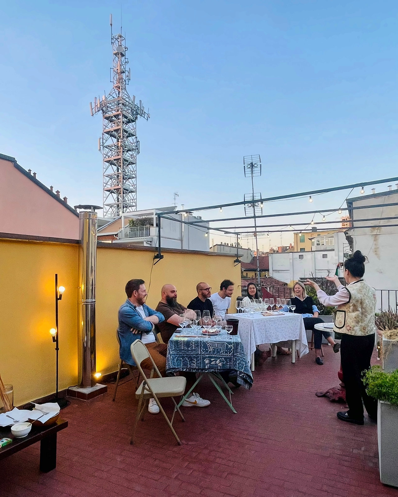
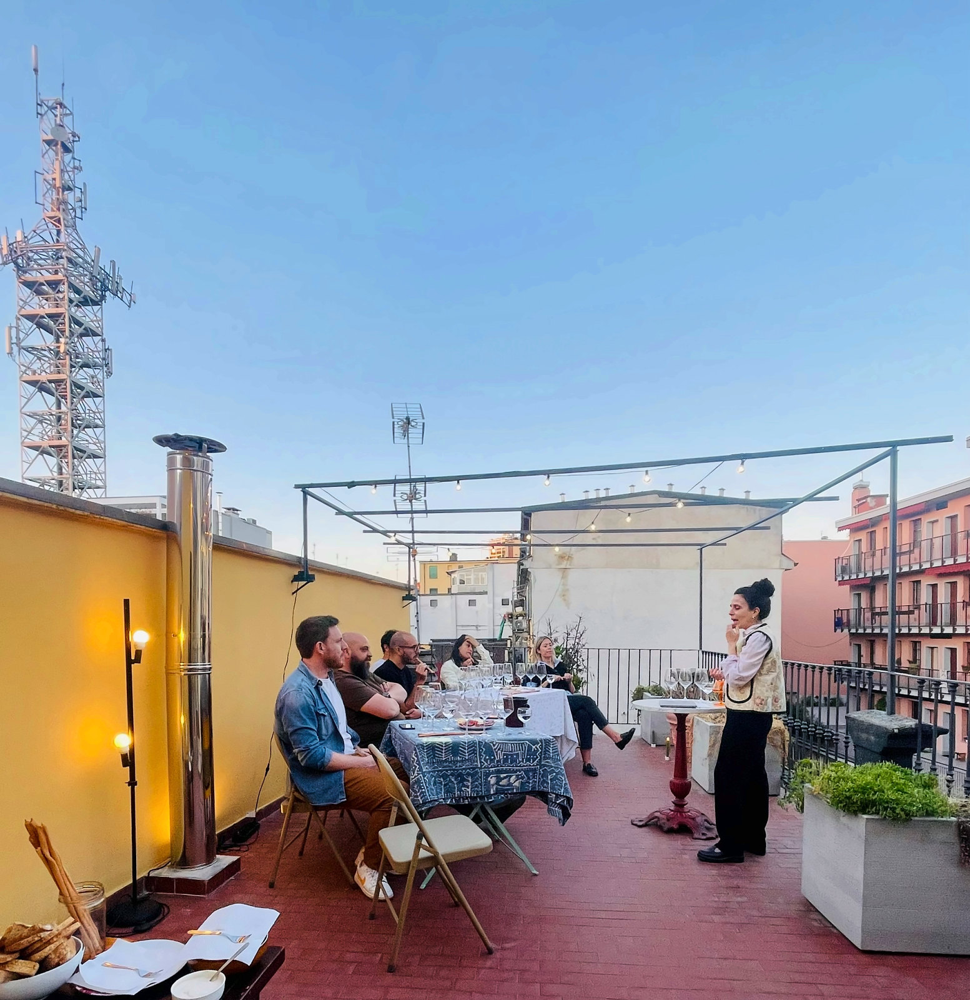
Corsi
Percorsi già pensati o costruiti su misura, in casa a Milano, da 1 a 4 persone.
- 01Corso base di introduzione al vino
- 02Focus bollicine
- 03Focus vini dolci e fortificati
- 04Su misura
- 05Da regalare
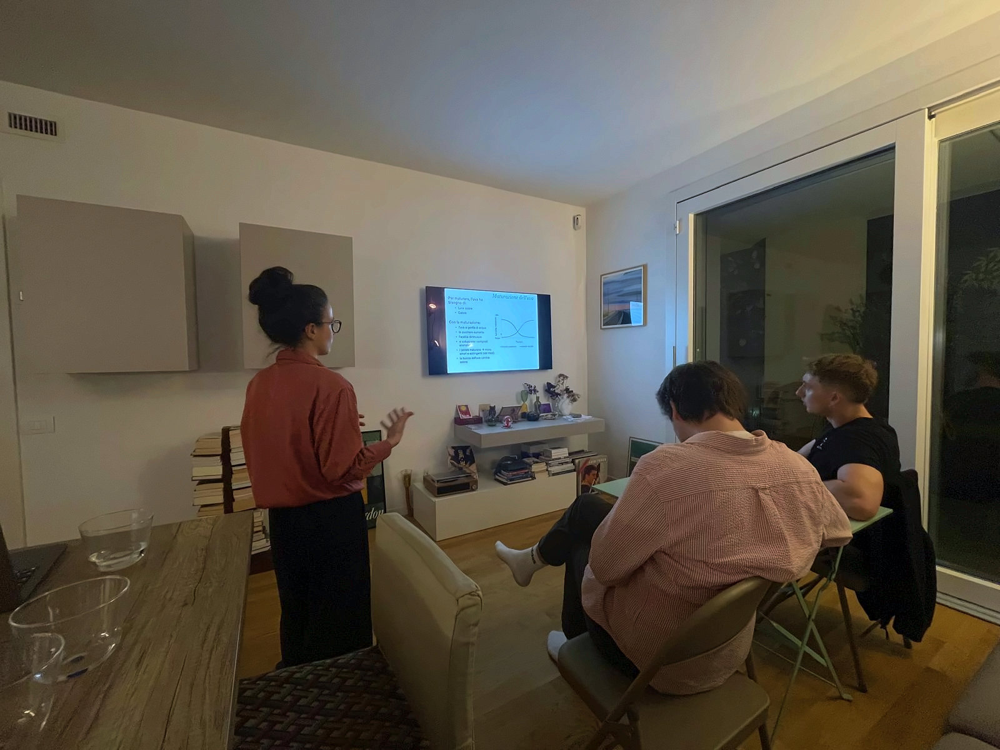
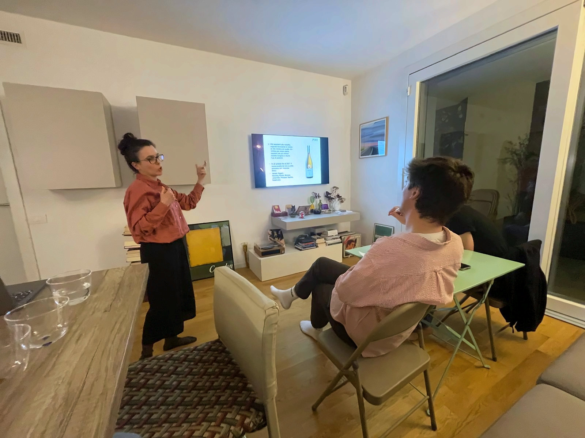
Degustazioni
Serate a tema dedicate a regioni e produttori che si incontrano di rado: cinque vini, qualcosa da mangiare e le storie di chi li fa. In casa, a Milano, con sei-dieci persone attorno allo stesso tavolo.
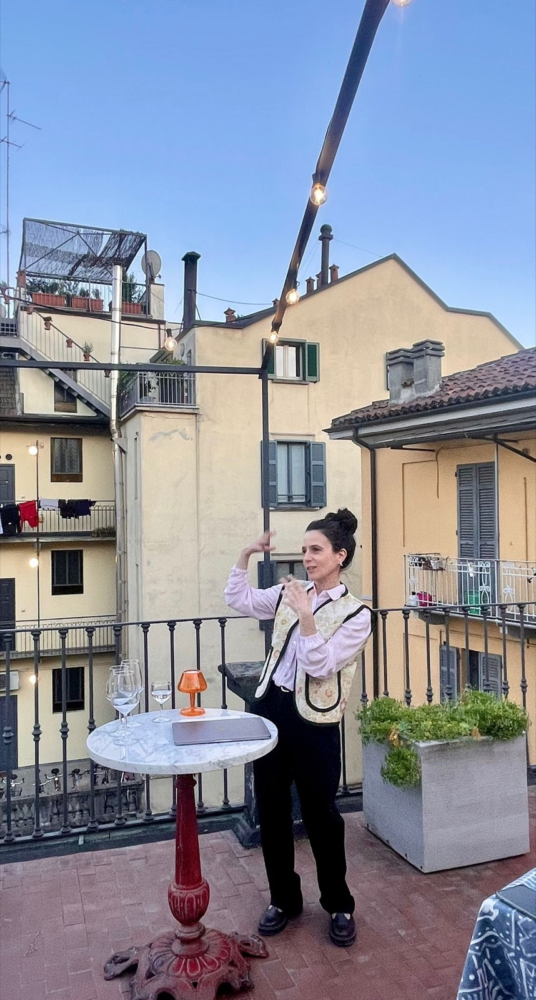
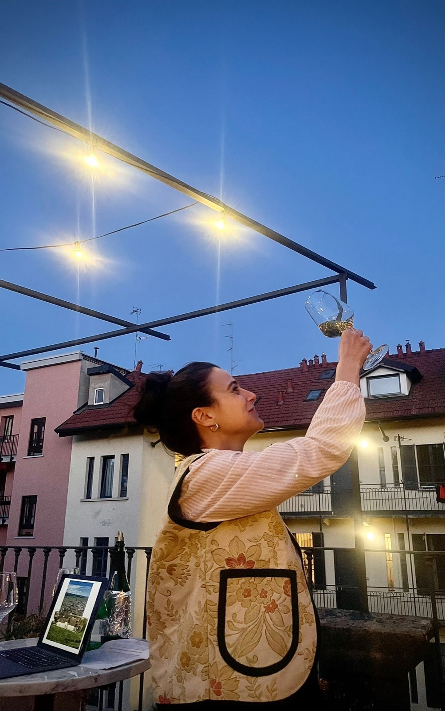
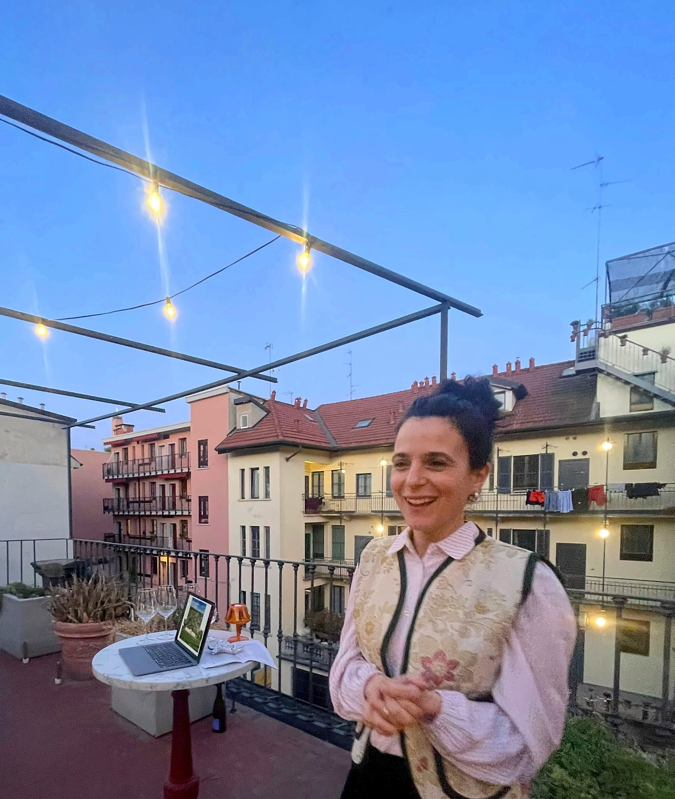
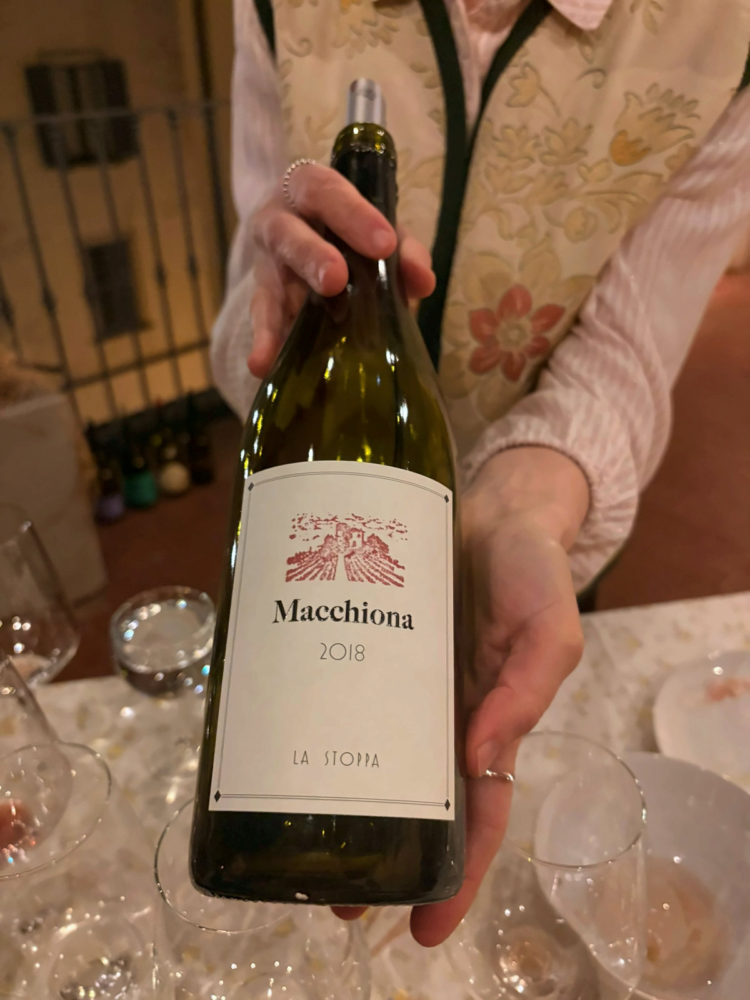
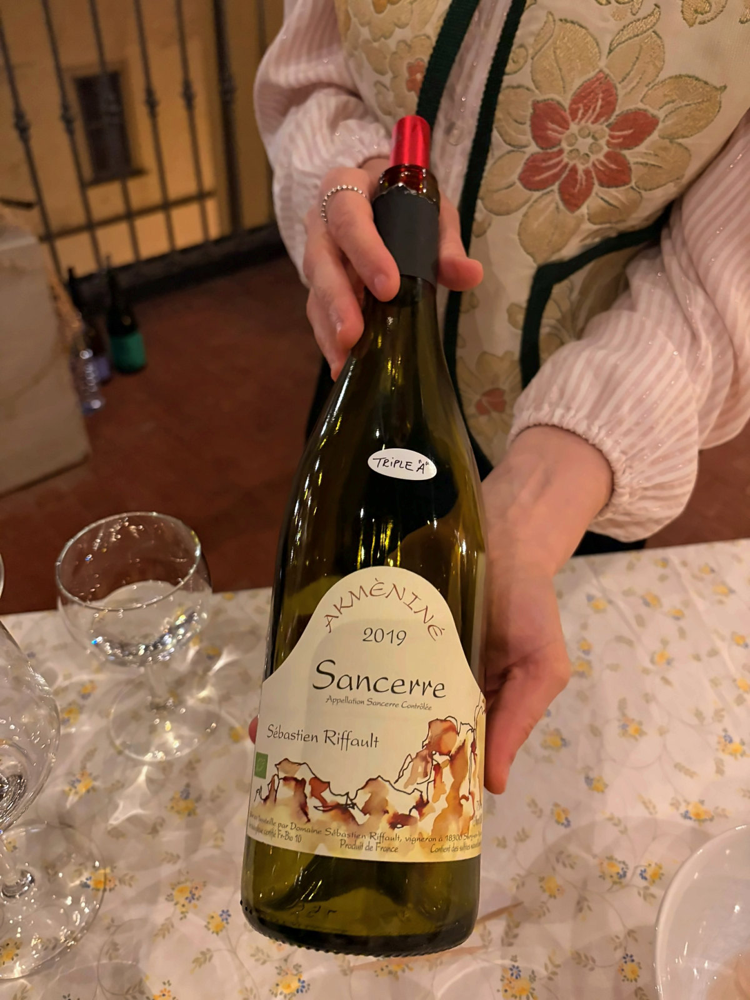
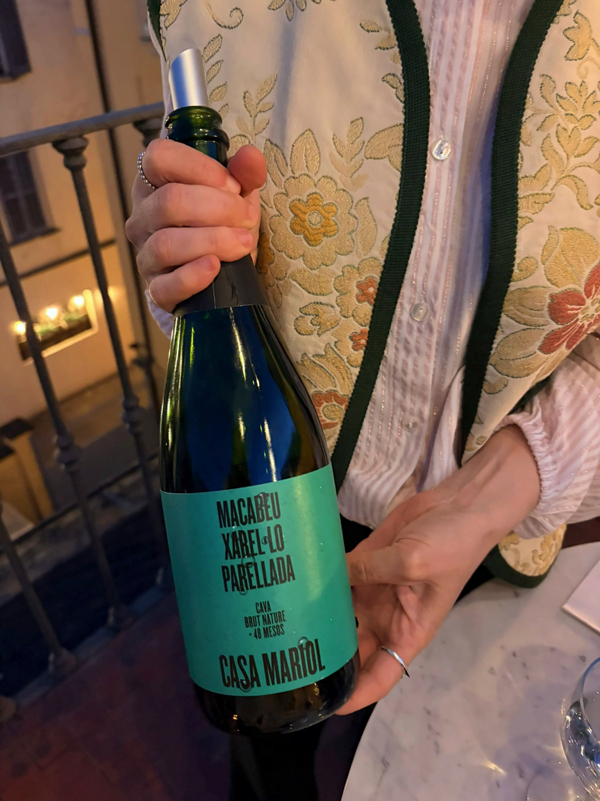
Collaborazioni
Lavoriamo con chi ha qualcosa da raccontare sul vino: cantine, enoteche, ristoranti e aziende. Ogni collaborazione nasce da un’idea condivisa e da un pubblico curioso.
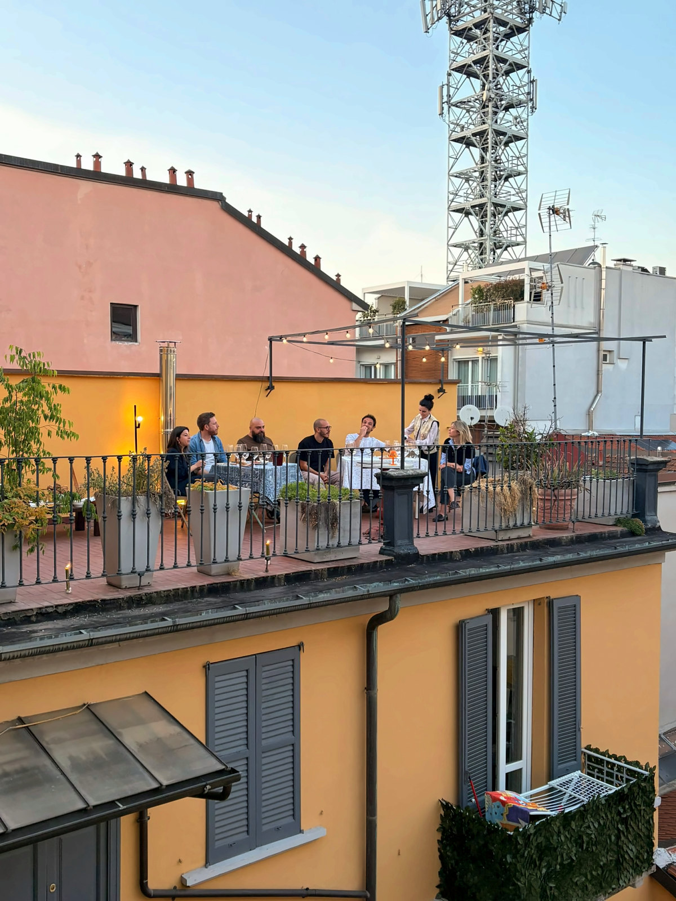
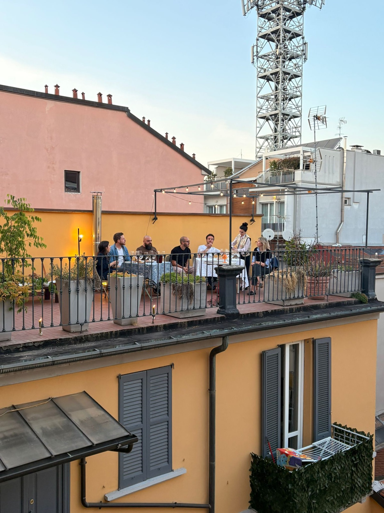
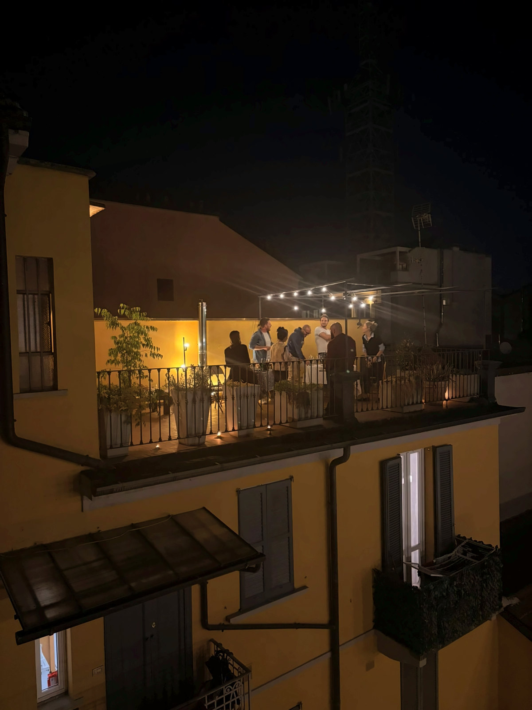
FAQ
Devo sapere già qualcosa di vino?
Dipende dal corso. Il corso base è pensato per chi non ne sa niente; i focus su bollicine e su vini dolci e fortificati richiedono un’infarinatura dei fondamentali. Se hai dubbi, decidiamo insieme se hai un livello adeguato.
Quante persone partecipano?
I corsi sono per 1 persona o piccoli gruppi, fino a 4 partecipanti al massimo.
Dove si svolgono gli incontri?
A Milano, in casa privata, in zona San Siro o zona City Life.
Posso regalare un corso o una degustazione?
Sì, scrivici e prepariamo un buono regalo personalizzato.
Come entro nella community WhatsApp?
Scrivici su WhatsApp o via email: ti aggiungiamo al gruppo e alla newsletter, senza tecnicismi.